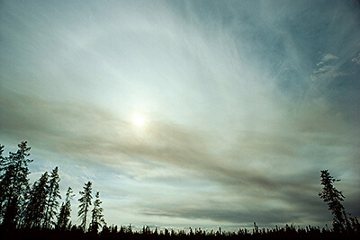
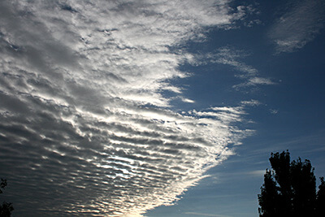
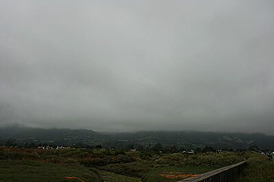
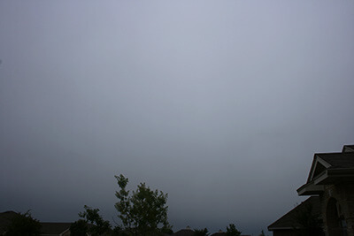
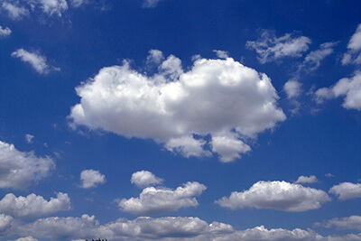

All clouds are made up of essentially the same thing: water droplets or ice crystals that float in the sky. But all clouds look a little bit different from one another, and sometimes these differences can help us predict a change in the weather.
Most clouds can be divided into groups (high/middle/low) based on the height of the clouds' base above the Earth's surface. Other clouds are grouped not by their height, but by their unique characteristics, such as forming alongside mountains (Lenticular clouds) or forming beneath existing clouds (Mammatus clouds).
| Grouping | Height | Type |
|---|---|---|
| High Clouds | 16,000 - 43,000 ft |
cirrus cirrocumuluscirrostratus |
| Middle Clouds | 7,000 - 23,000 ft | altocumulusaltostratus |
| Low Clouds | Surface - 7,000 ft | stratusstratocumulusnimbostratus |
| Clouds with Vertical Growth | Surface - 43,000 ft | cumuluscumulonimbus |
Cloud Details
Cirrus
Cirrus clouds are short, detached, hair-like clouds found at high altitudes. These delicate clouds are wispy, with a silky sheen, or look like tufts of hair. In the daytime, they are whiter than any other cloud in the sky. While the Sun is setting or rising, they may take on the colours of the sunset
Cirrocumulus
Cirrocumulus clouds are made up of lots of small white clouds called cloudlets, which are usually grouped together at high levels. Composed almost entirely from ice crystals, the little cloudlets are regularly spaced, often arranged as ripples in the sky.
Cirrostratus
Cirrostratus are transparent high clouds, which cover large areas of the sky. They sometimes produce white or coloured rings, spots or arcs of light around the Sun or Moon, that are known as halo phenomena. Sometimes they are so thin that the halo is the only indication that a cirrostratus cloud is in the sky.
Altocumulus
Altocumulus clouds are small mid-level layers or patches of clouds, called cloudlets, which most commonly exist in the shape of rounded clumps. There are many varieties of altocumulus, however, meaning they can appear in a range of shapes. Altocumulus are made up of a mix of ice and water, giving them a slightly more ethereal appearance than the big and fluffy lower level cumulus.
Altostratus
Altostratus are large mid-level sheets of thin cloud. Usually composed of a mixture of water droplets and ice crystals, they are thin enough in parts to allow you to see the Sun weakly through the cloud. They are often spread over a very large area and are typically featureless.
Stratus
Stratus clouds are low-level layers with a fairly uniform grey or white colour. Often the scene of dull, overcast days in its 'nebulosus' form, they can persist for long periods of time. They are the lowest-lying cloud type and sometimes appear at the surface in the form of mist or fog.
Stratocumulus
Stratocumulus clouds are low-level clumps or patches of cloud varying in colour from bright white to dark grey. They are the most common clouds on earth recognised by their well-defined bases, with some parts often darker than others. They usually have gaps between them, but they can also be joined together.
Nimbostratus
Nimbostratus clouds are dark, grey, featureless layers of cloud, thick enough to block out the Sun. Producing persistent rain, these clouds are often associated with frontal systems provided by mid-latitude cyclones. These are probably the least picturesque of all the main cloud types.
Cumulus
Cumulus clouds are detached, individual, cauliflower-shaped clouds usually spotted in fair weather conditions. The tops of these clouds are mostly brilliant white tufts when lit by the Sun, although their base is usually relatively dark.
Cumulonimbus
Cumulonimbus clouds are menacing looking multi-level clouds, extending high into the sky in towers or plumes. More commonly known as thunderclouds, cumulonimbus is the only cloud type that can produce hail, thunder and lightning. The base of the cloud is often flat, with a very dark wall-like feature hanging underneath, and may only lie a few hundred feet above the Earth's surface.